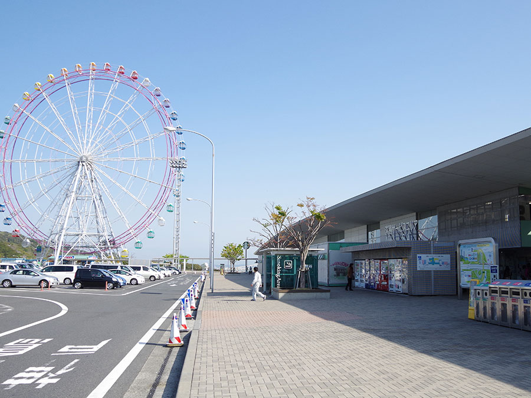
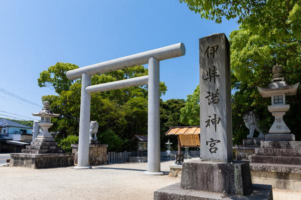
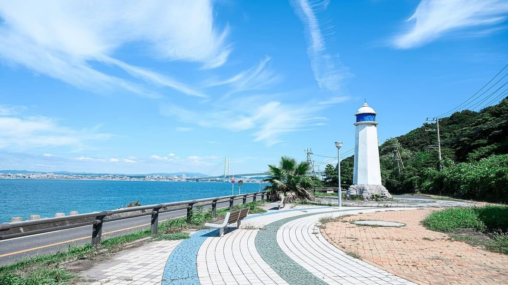
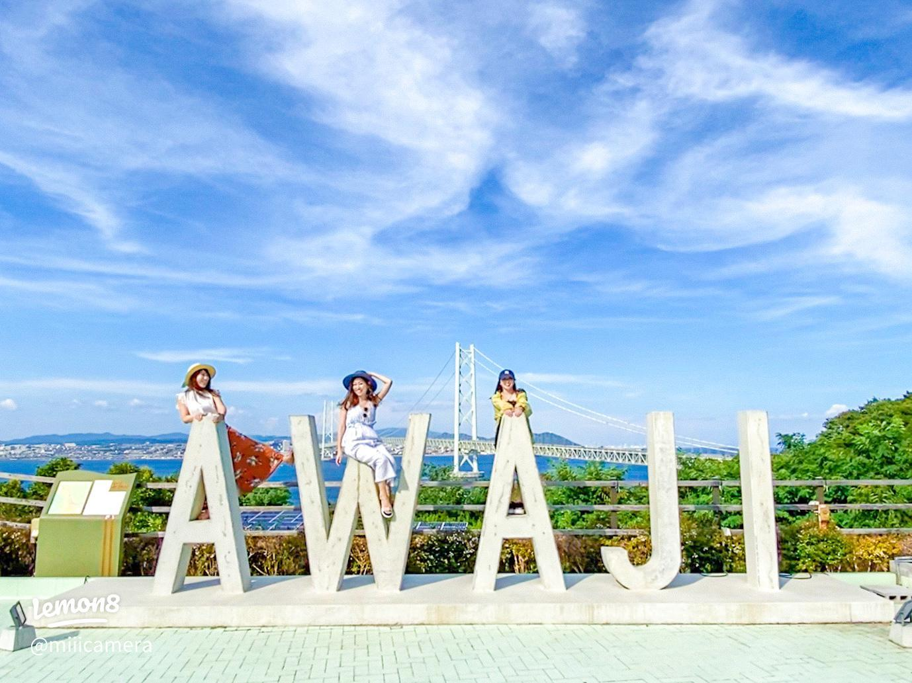
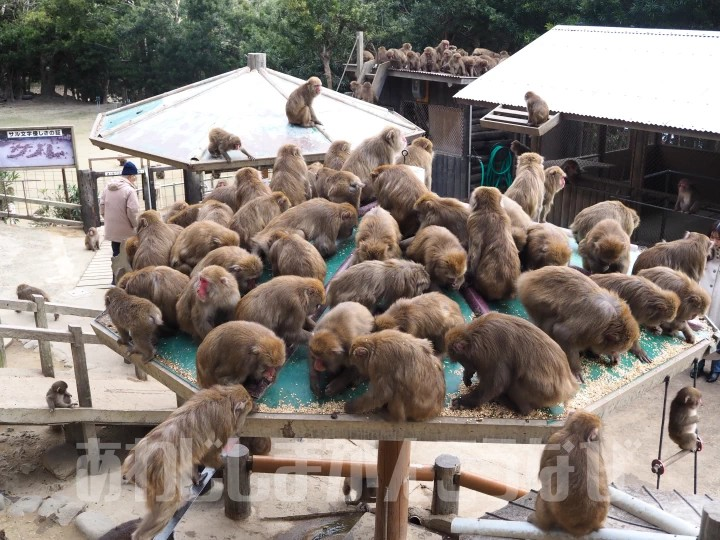
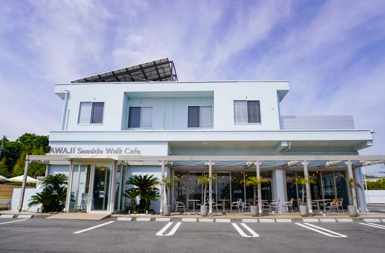

淡路島ハイウェイオアシス
明石海峡大橋を望める、淡路島の玄関口。島グルメと絶景を楽しみながらひと休み。
今回の旅行で向かう場所と、その詳細な情報です。

明石海峡大橋を望める、淡路島の玄関口。島グルメと絶景を楽しみながらひと休み。

海を望む丘一面に季節の花が広がる絶景スポット。標高約300mの丘陵地にあり、海まで見渡せます。

日本最古級の神社として知られる、淡路島の歴史を感じられる由緒あるパワースポット。

大鳴門橋を一望できる南淡路の人気スポット。淡路島グルメや名物「おっ玉葱」も楽しめる。

帰り道の休憩と夕食に立ち寄るサービスエリア。宝塚の街並みをイメージした「宝塚モダン」が楽しめる。

幸せのパンケーキ本店。全席オーシャンビューでフォトスポットも。

人気のフォトスポット

「ドラゴンクエスト」の世界を表現した屋外アトラクション

野生の猿を見学する施設
明石海峡を見守る歴史的灯台
淡路島バーガー専門店

淡路島バーガー専門店